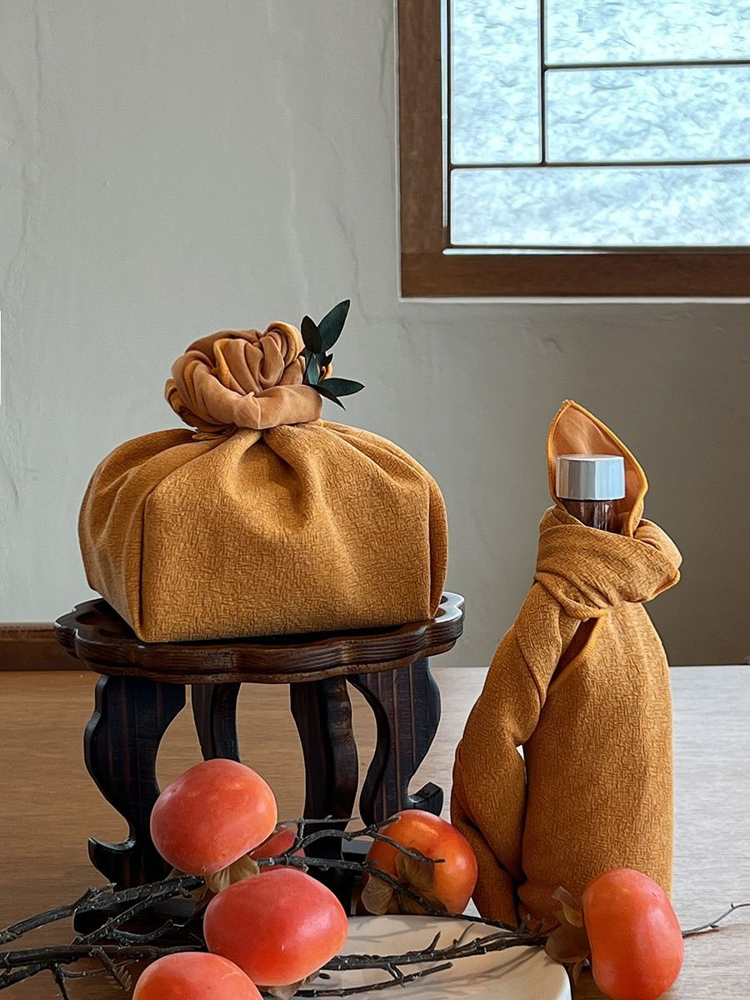
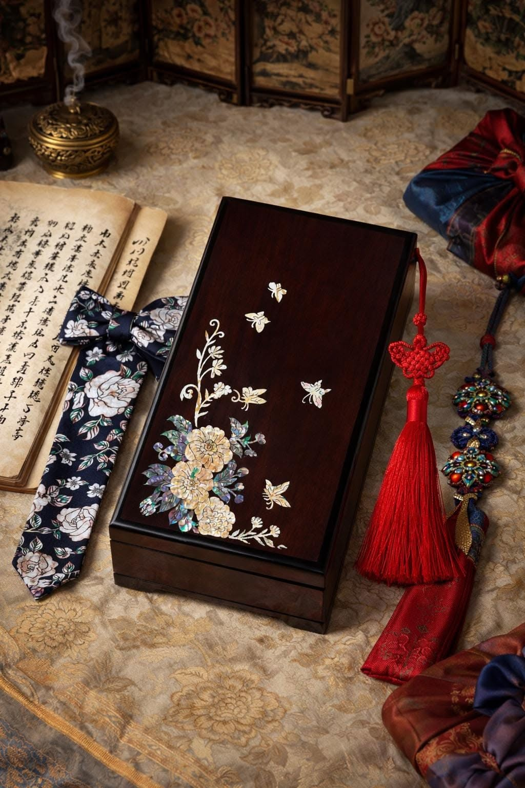
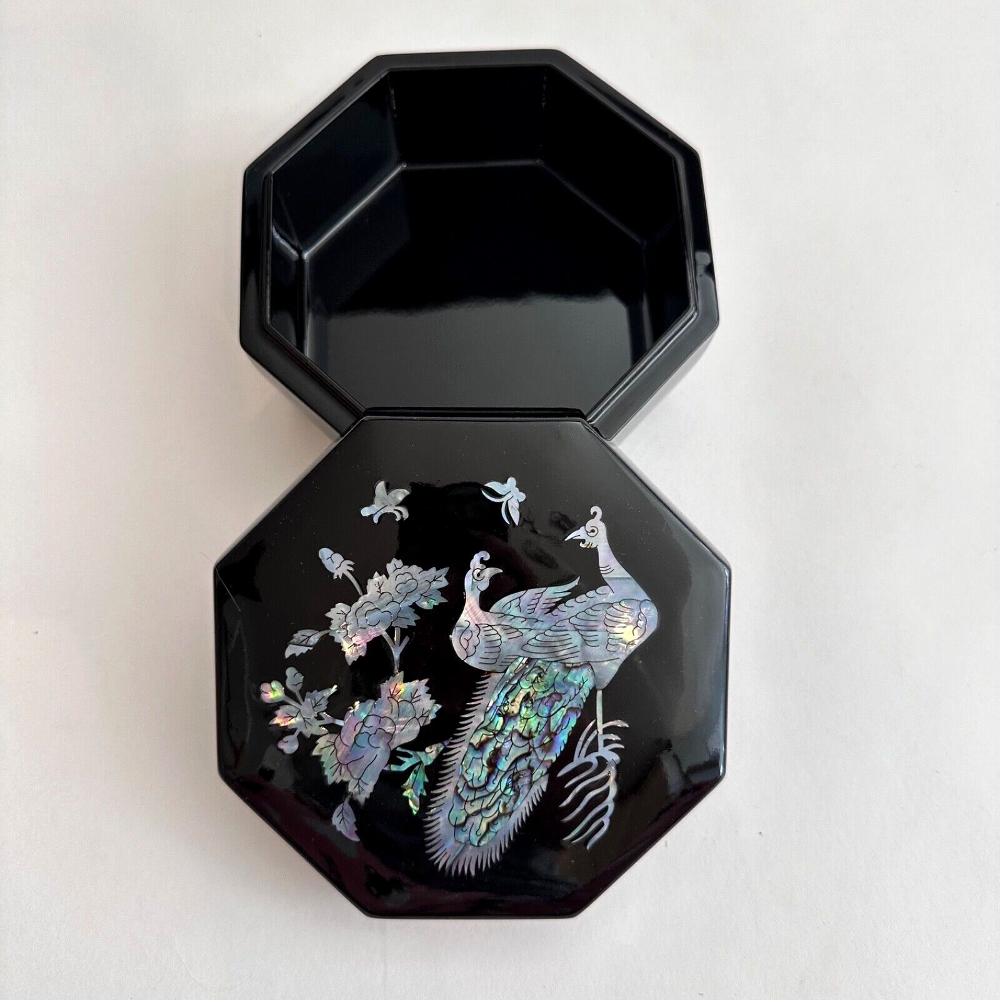
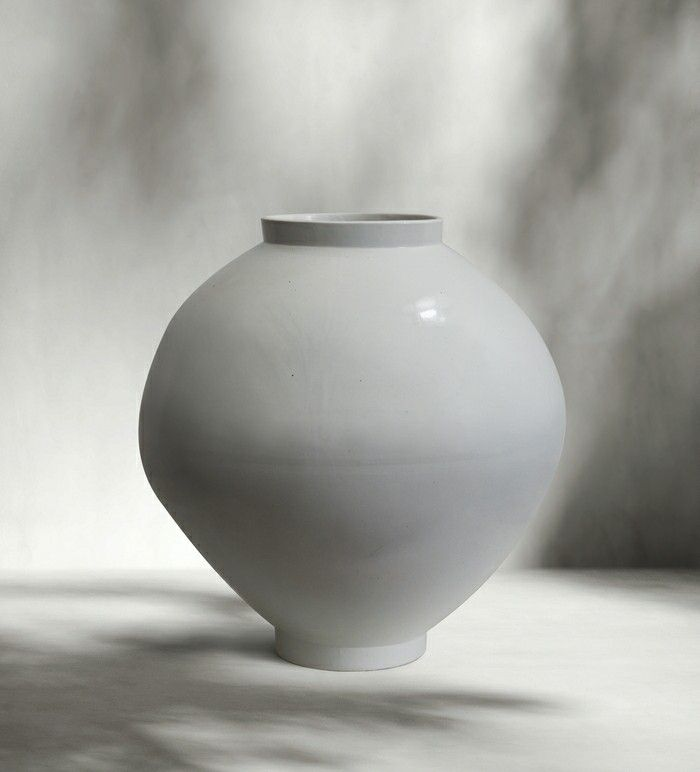

살롱 은결담
Art & Heritage to life
'Salon Eungyeoldam'
한국 공예 작가와 함께 보고 만드는 모임,
'살롱 은결담'
작가가 직접 작업 과정을 설명하고
참가자가 함께 작품을 만듭니다.
회차마다 12명까지 참여할 수 있습니다.
06. Salon Eungyeoldam
Moon Jar in Thread
실로 쌓아 올린 달항아리
바늘과 무명실로 달항아리 모양을 쌓아 올리는 섬유 공예 수업입니다.
- 일정
- 2026년 9월 18일 금요일
- 작가
- 섬유 작가 윤하담
실로 쌓아 올린 달항아리
1부 작가 설명 30분 · 2부 함께 만들기 90분 · 완성품은 가져갈 수 있습니다.

아티스트 소개

전통 공예 기법을 오늘의 재료로 다시 쓰는 작업을 합니다. 살롱 은결담에서는 작업 도구와 순서를 그대로 공개합니다.
05. Salon Eungyeoldam
Wrap, the Meaning of Blessing
복을 담는 보자기 포장

함보 포장법으로 복을 비는 매듭을 배우는 수업입니다.
- 일정
- 2026년 1월 15일 목요일
- 작가
- 보자기 작가 차소연
복을 담는 보자기 포장
1부 작가 설명 30분 · 2부 함께 만들기 90분 · 완성품은 가져갈 수 있습니다.
아티스트 소개
전통 공예 기법을 오늘의 재료로 다시 쓰는 작업을 합니다. 살롱 은결담에서는 작업 도구와 순서를 그대로 공개합니다.
04. Salon Eungyeoldam
Flowers of East and West
꽃으로 잇는 동양과 서양
한옥 공간에 맞춘 꽃 오브제를 만드는 수업입니다.
- 일정
- 2025년 12월 12일 금요일
- 작가
- 플로리스트 남궁별
꽃으로 잇는 동양과 서양
1부 작가 설명 30분 · 2부 함께 만들기 90분 · 완성품은 가져갈 수 있습니다.

아티스트 소개

전통 공예 기법을 오늘의 재료로 다시 쓰는 작업을 합니다. 살롱 은결담에서는 작업 도구와 순서를 그대로 공개합니다.
03. Salon Eungyeoldam
Contemporary Ceramics
흙으로 빚는 오늘의 도자

연리문 기법으로 자기만의 무늬를 만드는 도예 수업입니다.
- 일정
- 2025년 9월 4일 목요일
- 작가
- 도예가 김도결
흙으로 빚는 오늘의 도자
1부 작가 설명 30분 · 2부 함께 만들기 90분 · 완성품은 가져갈 수 있습니다.

아티스트 소개

전통 공예 기법을 오늘의 재료로 다시 쓰는 작업을 합니다. 살롱 은결담에서는 작업 도구와 순서를 그대로 공개합니다.
02. Salon Eungyeoldam
Lacquer Box
옻칠 함 만들기



작은 나무 함에 옻칠을 세 번 올려 마감합니다.
- 일정
- 2025년 5월 22일 목요일
- 작가
- 옻칠 작가 방서진
옻칠 함 만들기
1부 작가 설명 30분 · 2부 함께 만들기 90분 · 완성품은 가져갈 수 있습니다.
아티스트 소개
전통 공예 기법을 오늘의 재료로 다시 쓰는 작업을 합니다. 살롱 은결담에서는 작업 도구와 순서를 그대로 공개합니다.
01. Salon Eungyeoldam
Ginseng Tea Table
인삼 찻자리



인삼차를 내리는 순서와 찻자리 차림을 배웁니다.
- 일정
- 2025년 3월 13일 목요일
- 작가
- 차 연구가 문이랑
인삼 찻자리
1부 작가 설명 30분 · 2부 함께 만들기 90분 · 완성품은 가져갈 수 있습니다.
아티스트 소개
전통 공예 기법을 오늘의 재료로 다시 쓰는 작업을 합니다. 살롱 은결담에서는 작업 도구와 순서를 그대로 공개합니다.